Culture and Tradition
Pakistan has a rich cultural heritage, shaped by Islamic traditions, diverse ethnic groups, and a dynamic history.
Religion & Beliefs
- Islam is the state religion of Pakistan.
- 95% of the population is Muslim.
- The minority community Islam is practised by most Pakistanis and governs their personal, political, economic and legal lives.
- Islamic understanding, observing Islamic duties, respect for elders and gender roles are imbued from early childhood.
Major Celebrations
In addition to the declaration of national holidays when Pakistan wins key international cricket matches, Pakistan also has 6 formal national holidays which fall on:
- 23rd March: Pakistan Day
- 1st May: Labour Day
- 14th August: Independence Day
- 6th September: Defence of Pakistan Day
- 11th September: Death of Ali Jinnah
- 15th December: Birthday of Ali Jinnah
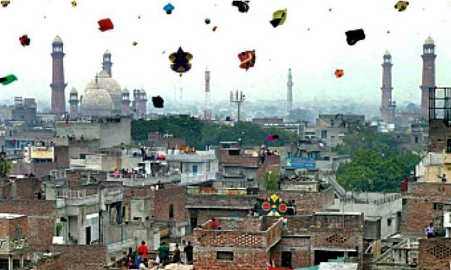
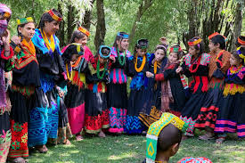
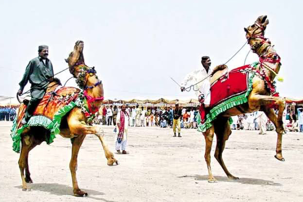
Gender Roles
- Traditional gender roles in Pakistan are fairly marked in that women are far more likely to stay in the home than go out to work.
- Although women have the right to work in any profession or manage their own business, the majority that do work are typically employed in roles such as nursing or teaching.
- Women are well represented in government, demonstrated by the appointment of Benazir Bhutto as prime minister in 1988.
- Women are also ministers, ambassadors, and judges in high courts.
- Pakistani women have equal rights to vote and receive education.
- Unfortunately, crimes against women are increasing, but government interventions are being implemented.
Clothing and Fashion
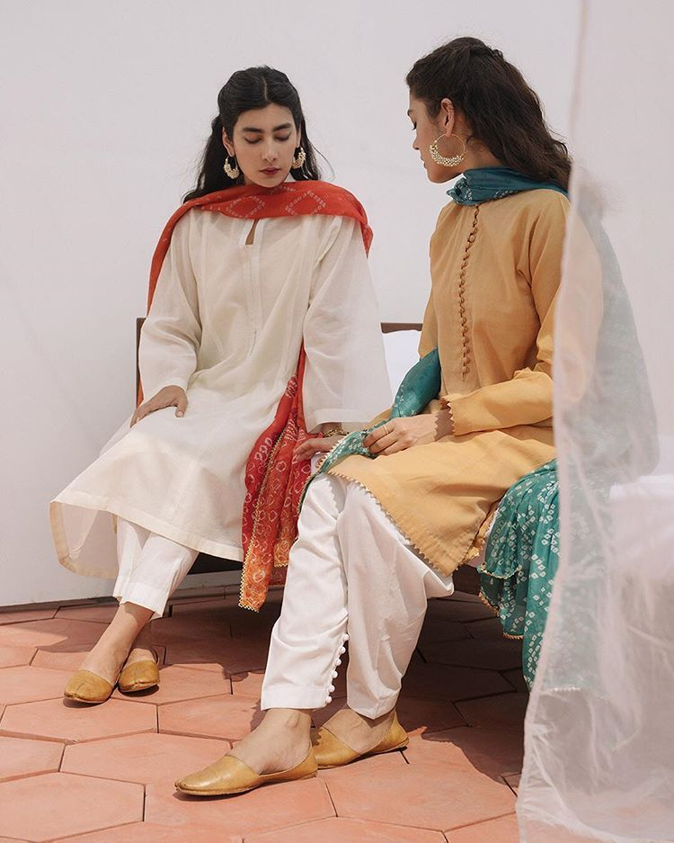
- Shalwar Kameez is the national dress of Pakistan worn by both men and women.
- Each province has its own style, including head dress and jewellery.
- Fabrics vary: silk, chiffon, cotton, with embroidery common on traditional clothing.
- Pakistan's fashion industry has evolved and flourished over time.
- The Pakistan Fashion Design Council (Lahore) and Fashion Pakistan (Karachi) organize regular fashion shows.
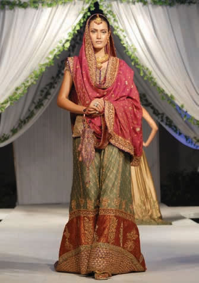
The Arts
Pakistan has a rich culture of arts and crafts with roots in the Indus Valley civilization.
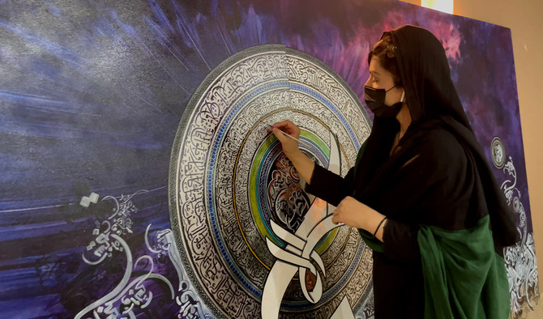
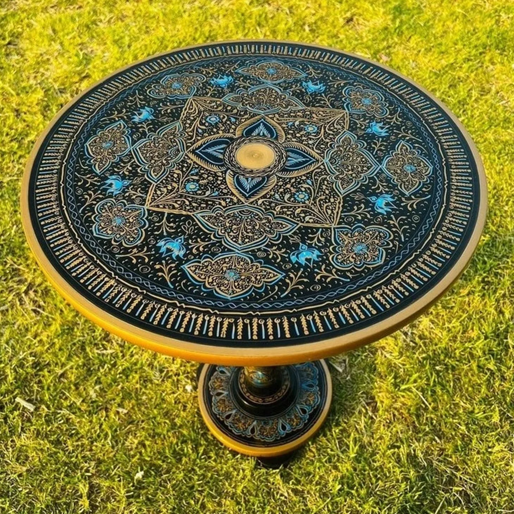
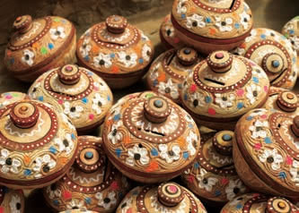
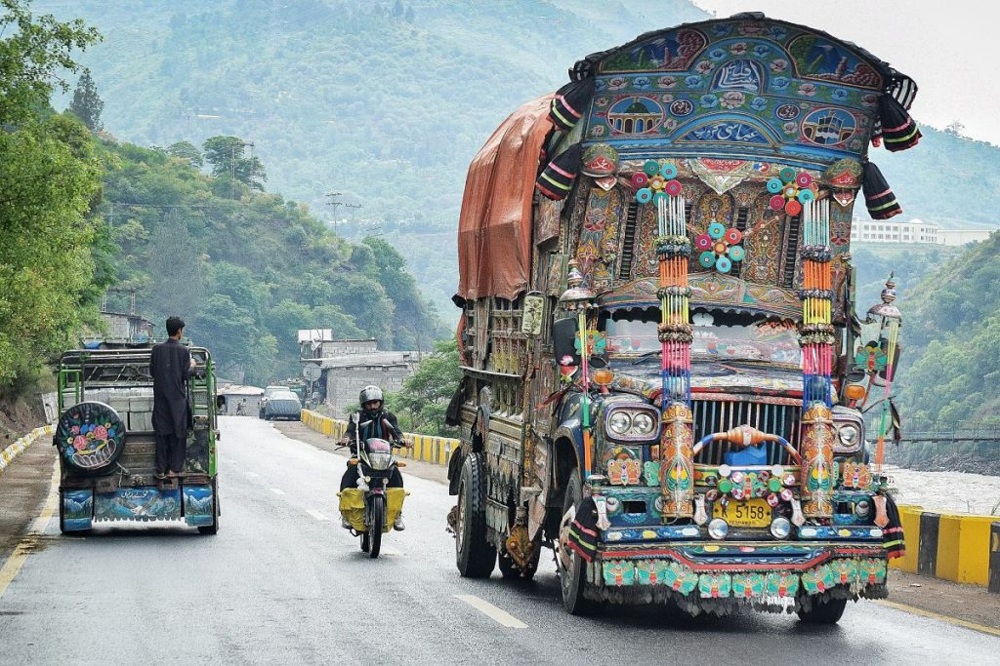
Music and Dance
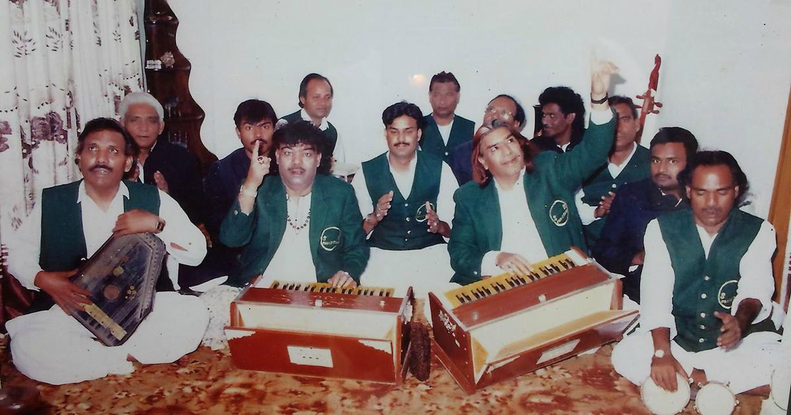
- Pakistani music ranges from folk music and Qawwali to modern fusion genres.
- Popular folk dances include Bhangra, Dhamal, Attan, Luddi, and Jhumar.
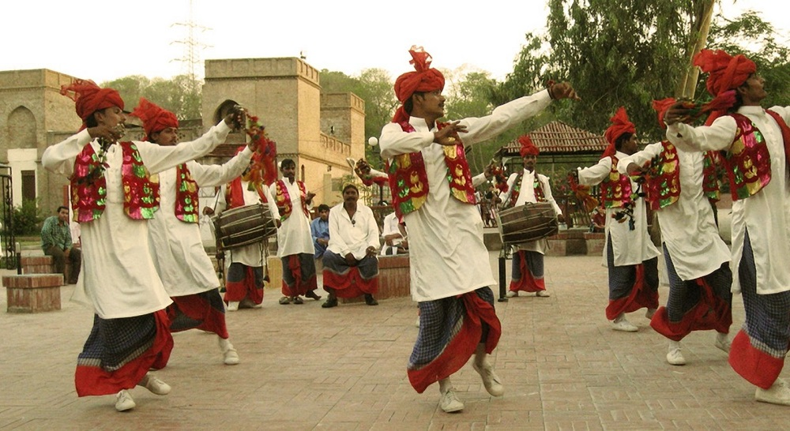
Literature
- Pakistan has rich Urdu and regional literature.
- Pre-19th century literature includes lyric, religious poetry, and folklore.
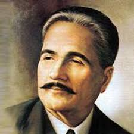
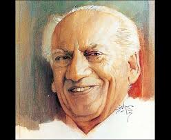
Sports
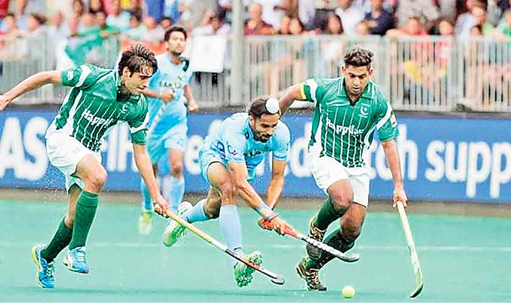
- Field hockey is the national sport; Pakistan has won many international tournaments.
- Cricket is the most popular sport. Pakistan's cricket team has won multiple World Cups.
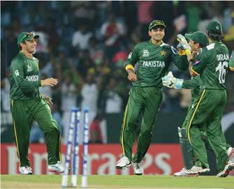
- Other sports: squash, badminton, tennis, volleyball, football, snooker, kabaddi, wrestling.